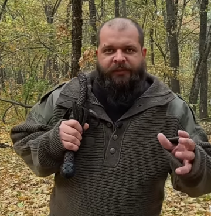

Великий мастер Сенсей, ведущий ютуб-канала ВЫЖИВАЛОВО, ролики которого обязан посмотреть каждый. Мало кто знает, что на фото выше, Сенсей держит молот,который был отнят у опытного медведя в 94 году в лесах Сибири. Косолапый с помощью молота умело маскировался под лесоруба и при случае нападал на людей. К счастью ему на пути попался мастер, и в ходе недолгого боя медведю снесли кабину. Теперь Сенсей носит молот с собой чтобы каждый зверь в округе знал с кем имеет дело.
(кликай на картинку выше)
В арсенале мастера есть еще много советов по выживанию и приспособлений. Хлыст является одним из таких и предназначен для эффективной борьбы с волками
А сейчас о самом главном. Сенсей часто жалеет своих жертв, не подпуская их к себе. Но в равном сражении мастер задействует свое главное оружие - пилу-струну.